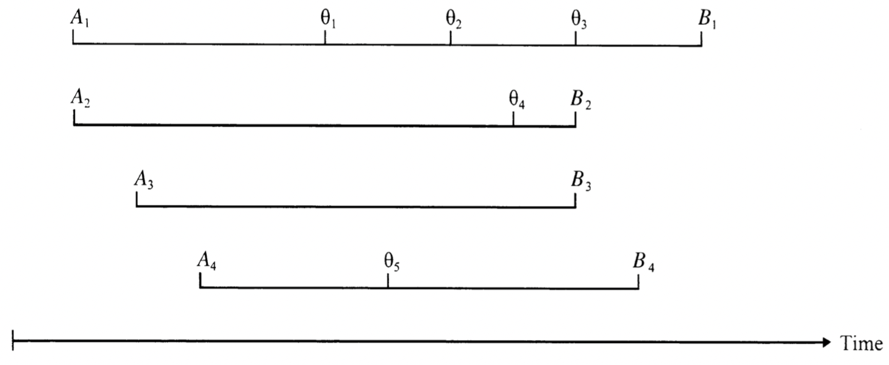
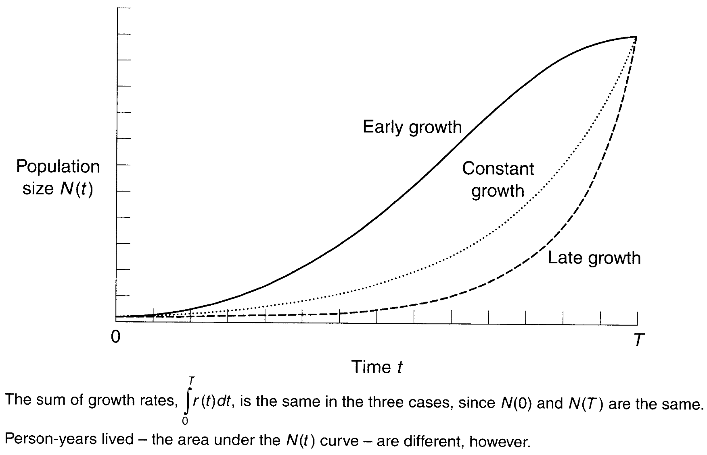
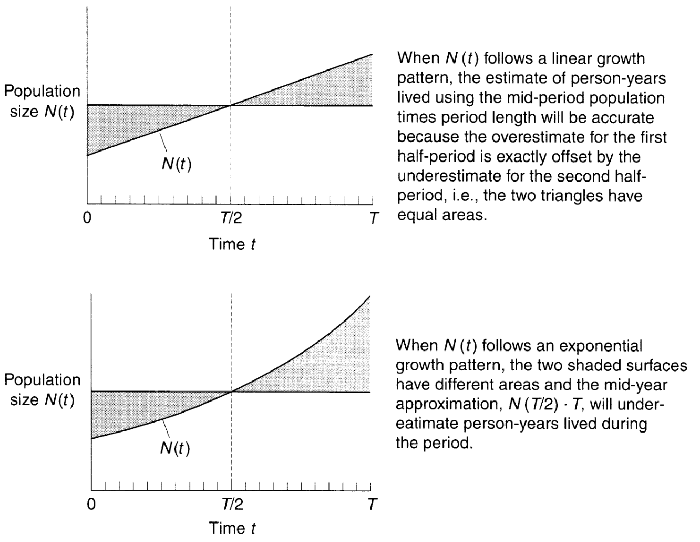

人口学勉強会購読資料(1,2章)
1 基本的な概念と測定
1.1 人口の意味
人口とは、ある時期ある地点で生存している人間の集合体であると同時に、構成員が変化しても存続するような集合体。人口学的分析は後者の持続的な集合性（サイズや伸び率、構成）に重点を置くと同時に、個人にとっての含意にも関心を持っている。その意味で、人口学とはミクロレベルとマクロレベルの分析を完全で満足のいくかたちで行う社会科学の一分野である。
1.2 人口変化のバランス方程式
人口が増える経路は出生か移動(流入、in-migration)の2つしかない。人口がより社会的要素を含めるとき、移動は社会移動として言及される(高校の卒業証書を得ることで、「高卒」に移動する)。出生時に決まる属性(出身地など)は出生によってのみ決まる。
人口が減る経路も死亡か流出(emigration)の2つの経路のみである。やはり出生時に決まる属性は死亡によってのみ決まる(国外へ流出しても出身地は変わらない)。
以上を踏まえて、T時点の人口は@eq-balance のように表現できる。Equation 1 は近似ではなく恒等式という点で社会科学の最も基幹的な式であるものの、実際のデータでは閉鎖の誤差(error of closure)と呼ばれる誤差が生じることがある1。
\[ N(T) = N(0) + B[0,T] - D[0,T] + I[0,T] - O[0,T] \tag{1}\]
1.3 人口率の構造
Equation 1 で示された4つの要素のうち流入以外の3つのイベント(event)はその前の人口に依存する。死亡と流出は1人の人間に、出生は2人の人間(親)に関連する。イベントの発生数を人口サイズに関連づけるために人口’率’(demographic rate)を計算する。
\[ 率 = \frac{イベントの発生数}{発生リスクへの曝露のパーソンイヤー} \]
ここで人口学における’率’とは一般的な統計用語での発生率を指す。本書において率はつねに真値を差し、記録された率や推定された率ではない。人口が多いほど発生頻度は大きくなり、総発生数は、その「リスク」にさらされている人口集団がいる限りで高くなる。パーソンイヤーはイベントが生起するリスクに曝露される量を示しており、分母は生起率として表現できる。
パーソンイヤーは人口学にとって中心的な概念。出生から死亡までの間に個人は関心となるイベント\(\theta_i\)に曝露される。定義された集団\(G\)にたいして人生線は以下の通りに示される。

Source: Preston(2000) 4頁より引用
集団\(G\)における率は下記式の通り。
\[ 率^G = \frac{\Sigma_{i \in G} N_i}{\Sigma_{i \in G} T_i} \]
1.4 期間率とパーソンイヤー
特定の時間に率を拡張する。
\[ 率[0, T] = \frac{0からT時点のイベントの発生数}{0からT時点の発生リスクへの曝露のパーソンイヤー} \]
0からT時点の発生リスクへの曝露のパーソンイヤーは Figure 1 のように示される。ある個人が0からTの間にずっと観察されれば1を取り、1クォーターだけ観察されれば\(\frac{1}{4}\)を取る。aのように同じ個人を複数時点で観察してパーソンイヤーを算出する方法(個人からみる)と、bのように同じ時点で個人数を観察してパーソンイヤーを算出する方法(時点からみる)がある。
Source: Preston(2000) Figure1.1より引用
1.5 人口学における主な期間率
これまで論じた率を Equation 1 の4つの要素に拡張する。
- 粗出生率(crude birth rate)
\[ CBR[0, T] = \frac{0からT時点の間の人口の出生数}{0からT時点の間の人口で観測されるパーソンイヤー} \]
- 粗死亡率(crude death rate)
\[ CDR[0, T] = \frac{0からT時点の間の人口の死亡数}{0からT時点の間の人口で観測されるパーソンイヤー} \]
- 粗流入率(crude rate of in-migration )
\[ CRIM[0, T] = \frac{0からT時点の間の人口の流入数}{0からT時点の間の人口で観測されるパーソンイヤー} \]
- 粗流出率(crude rate of out-migration)
\[ CROM[0, T] = \frac{0からT時点の間の人口の流出数}{0からT時点の間の人口で観測されるパーソンイヤー} \]
粗流入率の定義からも分かるように、人口学において暴露とイベントの結びつきはあまり厳密ではなく、恣意性が伴う(同じ人口に流入するリスクは0)。分母をパーソンイヤーとすることはほかの異なる関数や数式を発展させ、統合するための基盤となる。
期間率についていくつか留意点がある。第一に、期間率を基準となる値が計算される期間と暴露時間の測定単位を区別することが重要である。慣習的には’年次’の率が計算される。第二に、期間率を算出するうえで何かしらの基準年は必ず必要である。「日本の粗出生率」という用語はあまり意味をなさない。
1.6 人口学における成長率
1.6.1 粗成長率
0からT時点での粗成長率\(CGR\)は Equation 2 のように定義される。
\[ CGR[0, T] = CRNI[0, T] + CRNM[0, T] \tag{2}\]
1.6.2 瞬間成長率
\(0\)から\(T\)までの代わりに、\(t\)から\(t + \Delta t\)までの成長率は Equation 3 に示される。
\[ r(t) = \lim_{\Delta t \to 0} \frac{\Delta N(t)}{N(t) \Delta t} = \frac{\frac{d N(t)}{dt}}{N(t)} = \frac{d In [N(t)]}{dt} \tag{3}\]
Equation 3 の概念を\(0\)から\(T\)時点の期間に拡張することで Equation 4 が得られる。 Equation 4 は\(0\)から\(T\)までの期間における人口の変化を瞬間成長率の総和として表現する。一般に使われる用語として「指数関数的増加(exponential term)」があるが、 Equation 4 が示すように、すべての成長は指数関数的といえる。一般的に用いられる「指数関数的成長」はマルサスでいうところの「幾何学的成長」あるいは「定常的成長」がより妥当である。もし瞬間成長率が\(0\)から\(T\)まで一定であれば、 Equation 4 は\(N(T) = N(0) e^{r^{\star} \times T}\)と表現できる。\(r^{\star}\)は定常的成長率を示す。
\[ N(T) = N(0) e^{\int^T_0 r(t) dt} \tag{4}\]
1.6.3 平均年間成長率
\(\int_{0}^{T} r(t) dt = In \left( \frac{N(T)}{N(0)} \right)\)をTで割ることで\(0\)から\(T\)までの平均の瞬間成長率が得られる。
\[ \bar{r} [0, T] = \frac{In \left( \frac{N(T)}{N(0)} \right)}{T} \]
1.6.4 倍増時間
\(0\)から\(T\)までに人口が2倍になる平均年間成長率は0.693に一致する（\(In \left( \frac{N(T)}{N(0)} \right) = In(2) = 0.693\)）。定常的成長率\(r^{\star}\)では\(\frac{0.693}{r^{\star}}\)となる。もし年間の定常成長率が0.03ならば、人口が2倍になる時間は\(\frac{0.693}{0.03} = 23.1\)年となる。
1.6.5 粗成長率と平均年間成長率の比較
(網羅性のために入れたので、読み飛ばしても良い)
\(0\)から\(T\)時点において、粗成長率と平均年間成長率は一致するものの、粗成長率の分母であるパーソンイヤーは成長率が増加する順序に依拠するため、成長率の分布において異なる。
\[ CGR[0, T] = \frac{N(T) - N(0)}{\left[ \frac{N(T) - N(0)}{r^{\star}} \right]} = r^{\star} \]
\[ r^{\star}[0, T] = \int^T_0 r^{\star} dt = r^{\star} \]

Source: Preston(2000) Figure1.2より引用
1.7 パーソンイヤー期間の推定
人口の増え方\(r(t)\)(\(N(t)\))について知り得ない場合、我々は成長率の定常性を仮定して Equation 5 のようにパーソンイヤーを計算する。実際に定常性が満たされれば Equation 5 は真値と一致するが、それには\(0\)時点と\(T\)時点の観察が必要になる。普通は人口サイズ推定が特定の期間(1年の中ごろ)にのみ入手可能であることがままある。中ごろでの近似は人口の増え方\(N(t)\)が線形であれば真のパーソンイヤーと一致する。定常成長率の総積であっても誤差は非常に小さい。ただし、パーソンイヤーを推定する時間間隔が1年以上になると誤差は大きくなる。1年中ごろに着目することは簡単でかなり正確だけれどもそれはパーソンイヤーの代替物ではなく推定値であることには留意が必要。
\[ PY[0, T] = \frac{ \left[ N(T) - N(0) \right] \times T}{In \left[ \frac{N(T)}{N(0)} \right]} \tag{5}\]

Source: Preston(2000) Figure1.3より引用
1.8 コホートの概念
コホートとは特定の期間に特定の人口学的イベントを経験するすべての単位の集約。つねに特定の地理的参照軸を持つ。人間だけでなく特定の移行（結婚）なども含まれる。「日本の1942年コホート」「フランスの1990年女性結婚コホート」など。もっとも頻繁に使われるコホートは出生コホート。たとえば1942年に生まれたコホートは、1952年には同じ時期に10歳になる。特定のコホートにたいして人口率を計算するうえでは、たんにパーソンイヤーと生起件数を特定のコホートに限定すれば良い。
1.9 イベントの生起確率
確率probabilityとはそれが起きた割合rateというよりもむしろ、イベントが起こるかどうかの機会chanceに言及している。たとえば、ある結婚コホートが離婚に至る確率は\(\frac{離婚数}{結婚数}\)となる。(全員の)観測された離婚の頻度の代わりに相対頻度アプローチを採用することで、離婚確率を推定する。統計学でいうところの最尤推定に近い2。
\[ 確率 = \frac{イベントの発生数}{先行するイベント(施行)の数} \]
人口学において確率の表現は人口率の表現とは大きく異なる。率と異なり確率は1を超えないし、0を下回ることもない。人口それ自体は人口に含まれる関係しないかぎり確率を持たない(ある暦年の結婚件数と離婚件数を数えても確率は計算できない)。コホートと確率の概念は社会科学の縦断データとも密接に関係しており、不定形で未分化な個人を「位置付ける」ための集合レベルの測定として機能する。
概念的な単純さにもかかわらず、実際のコホートの分析においては、(1)ある個人が死亡するまでの情報をすべて必要とする、(2)完全なデータを手に入れたとしても、それはかなり古いものになっているという問題が生じる。後者の問題については仮説的コホートという概念を後ほど導入して向き合う。
2 年齢固有の率と確率
1章で説明した粗人口率は年齢によるばらつきを考慮できていない。とくに死亡や出生などでは、その年齢でのばらつきは生理学的な容量を主として反映しているし、移動の年齢による違いは社会的・経済的成長性を示している。以上の理由から、本章では年齢特有の率と確率を定義する。
2.1 期間年齢固有率
\[ {}_n M_x [0, T] = \frac{0からT時点の間の、xからx+nの年齢における死亡の数}{0からT時点の間の、xからx+nの年齢において生存していたパーソンイヤーの数} \]
年齢の開始時点\(x\)とその区間\(n\)は一般的に聞かれる完了した年数(completed year、最後の誕生日での年齢とも呼ばれる)とは異なり、小数点以下を含める正確な年数(exact year)を示す3。
Source: Preston(2000) Table2.1より引用
Figure 2 を確認する。この図からは、CDRはスウェーデンのほうが高い一方で、\(M^\star_i\)はすべての年齢でスウェーデンが低いという矛盾が生じていることが見て取れる。この矛盾はCDRを Equation 6 のように分解することで理解できる。 Equation 6 より、粗死亡率は年齢固有の死亡率の集合と人口の年齢分布の関数、すなわち人口の年齢分布による年齢固有の死亡率の重みづけ平均となる。当然、\(\Sigma^{\infty}_{x=0} {}_n C_x = 1\)となる。スウェーデンは年齢固有死亡率の高い高齢者人口に死亡が集中しているため、粗死亡率が高くなる。
\[ CDR = \frac{D}{N} = \frac{\Sigma^{\infty}_{x=0} {}_n D_x}{N} = \frac{\Sigma^{\infty}_{x=0} \frac{{}_n D_x}{{}_n N_x} {}_n N_x}{N} = \Sigma^{\infty}_{x=0} \frac{{}_n D_x}{{}_n N_x} \times \frac{{}_n N_x}{N} = \Sigma^{\infty}_{x=0} {}_n M_x \times {}_n C_x \tag{6}\]
Equation 6 のような分解は人口をあらゆるサブ集団に分割するときにも適用できるが、以下の4つの理由からとくに年齢構成にとって意義がある。
死亡率は年齢によるばらつきを大きく示す
人口集団において年齢構成は大きく異なる(たとえば、スウェーデンとカザフスタン)
年齢分布それ自体が人口学的変数であり、人口の出生・死亡・移動の歴史によって規定される
年齢固有の死亡と人口サイズはどちらもデータを入手できる
人口のあらゆる割合はあるカテゴリに属する人口の割合で重みづけしたカテゴリ固有の割合として規定される。年齢固有率を表現するために、\(i\)番目の年齢グループを示す\(i\)を使うこともある。\(i\)を用いた粗死亡率は\(CDR = \Sigma^{\infty}_{i=0} M_i \times C_i\)と表現できる。\(i\)を使う意義は等間隔でない年齢区間を示せることにある(0歳、1-4歳、5-9歳、など)。
2.2 年齢標準化
2つの人口集団(上の例におけるスウェーデンとカザフスタン)を比較するうえでは、年齢構成の影響は除去することが望ましい。それを達成する最も直接的な方法は2つの人口集団における年齢構成が同じであると仮定すること。より一般的には年齢分布を標準化してその影響を小さくする。人口それ自体の年齢分布ではなく’標準的な’人口の年齢分布によって重みづけする方法は年齢標準化と呼ばれ、ある人口\(j\)における年齢標準化粗死亡率(\(ASCDR\))は Equation 7 で表現される。このような標準化のアプローチは死亡率以外にも(e.g., 識字率)、年齢以外でも(e.g., 出生順序)適用できる。
\[ ASCDR^j = \Sigma^{\infty}_{i=1} M_i^j \times C_i^s \tag{7}\]
いかなる人口(構造)を’標準的’とみなすかは、死亡率の2つの人口間での差の大きさだけでなく向きまでをも規定するものの、シンプルなルールは存在しない。だが恣意的になることはより望ましくないので、2つのルールを課す。
2つだけの人口を比較する場合、その平均を標準とみなす。
2つより多い人口を比較する場合、その人口構造の平均や中央値に近い値を標準的として用いる。
このルールは以下3つの条件が満たされるときに有用である。
2つの人口集団のマクロレベルの変数(率や割合など)を比較する。
各人口内のサブ集団ごとに異なる値を取る。
そもそも、サブ集団による人口構成が比較に及ぼす影響を最小化したい。
「人口Aの年齢分布が人口Bの年齢分布だった際の人口Aの粗死亡率」だけでなく、「人口Aの年齢固有死亡率が人口Bの年齢固有死亡率だった際の人口Aの粗死亡率」にも関心があることがある(とくに\(A\)に死亡率のデータがない場合)。このような関心には比較死亡比(Comparative Mortality Ratio、CMR)と呼ばれる、人口集団\(A\)の実際の死亡数と人口集団\(B\)の死亡率スケジュールの期待値の比をもとめて回答する。
\[ CMR = \frac{\Sigma_i N^A_i \times M^A_i}{\Sigma_i N^A_i \times M^B_i} = \frac{D^A}{\Sigma_i N^A_i \times M^B_i} \]
もしCMRが1より大きければ、人口集団\(A\)の年齢固有死亡率が\(B\)より高いことを(少なくとも1つの年齢区間においては)示す。このような人口学的方法は「間接的標準化」と呼ばれる。
2.3 比率間の差異を分解する
類似した問いとして、「\(A\)と\(B\)の死亡率の差は、どの程度年齢分布によってもたらされているのか？」がある。この問いには分解の方法でアプローチできる。人口集団\(A\)と\(B\)の粗死亡率の差\(\Delta\)は年齢構成の差異の寄与と率スケジュールの差異の寄与で分解できる。この分解は残差や交互作用項を扱わなくて良い点で恣意性が低く、望ましいアプローチである。
以上の方法は2集団間比較における手法である、それ以上の集団にて寄与する際にはより複雑なアプローチが求められる。やはり、死亡率や年齢以外でも適用できる。
2.4 レクシスダイアグラム
特定のコホートにイベントの生起(e.g., 死亡)を限定することで、コホートの年齢固有率を知ることができる。レクシスダイアグラムは一方の軸に年齢を、他方の軸に暦年をプロットする、コホートの暴露区分と期間の暴露区分の関係を示す図である。あるコホートの人生は45℃線で示される。イベントの発生のカウントを、年齢固有コホート率は\(A-C\)の範囲に、年齢固有期間率は\(A-P\)の範囲に、コホート固有期間率は\(C-P\)の範囲にそれぞれ限定することが読み取れる。
Source: Preston(2000) Figure2.1より引用
2.5 年齢固有確率
率だけでなく確率も年齢固有に示すことができ、\(x\)から\(x+n\)までにイベントが生起する確率は慣習的に\({}_n q_x\)と表現する。レクシスダイアグラムで図示できる。 Figure 5 を例にあげる。1995年出生コホートが0歳から1歳までに死亡する確率は\({}_1 q^{1995c}_0 = \frac{2}{6} = 0.333\)である。
Source: Preston(2000) Figure2.2aより引用
具体的な出生数とイベントの生起数を Figure 5 や Figure 6 のように表現することができる。
Source: Preston(2000) Figure2.2bより引用
Source: Preston(2000) Figure2.2cより引用
\(Y\)年\(x\)歳(最後の誕生日)における分離因子(\(Y\)年の間に\(x\)歳に達した人に起こった、\(Y\)年\(x\)歳における死亡の割合)は同年の死亡と前年の死亡に分解することで求める。
\[ SF_x(Y) = \frac{{}_S D_x (Y)}{D_x (Y)} = \frac{{}_S D_x (Y)}{{}_S D_x (Y) + {}_P D_x (Y)} \]
2.6 単一暦年の死亡経験にもとづいた死亡確率
ある期間の死亡にはあるコホートの同年の死亡と別のコホートの前年の死亡の2つから構成されることがわかった。単一暦年の年齢固有死亡率(たとえば、乳幼児が1歳で死亡する確率)の推定を統合して算出するためには以下のような式を求める。
\[\begin{eqnarray} {}_1 q_0 &= 乳幼児が出生暦年に死亡する確率 \\ & + 乳幼児が出生暦年に生存する確率 \\ & \times 乳幼児が出生暦年に生存し、1歳に到達する前かつ次の暦年に死亡する確率 \end{eqnarray}\]
適切な要素をあてはめる。
\[ {}_1 q^{Y_c}_0 = \frac{{}_S D_0 (Y)}{B_0(Y)} + \frac{B(Y) - {}_S D_0 (Y)}{B_0 (Y)} \times \frac{{}_P D_0 (Y+1)}{B_0(Y) - {}_S D_0 (Y)} = \frac{{}_S D_0(Y) + {}_P D_0 (Y+1)}{B_0 (Y)} \]
合成の基本的な考え方は分子の死亡項を同じ暦年から取り出すことにある。暦年\(Y\)の0歳から1歳の死亡確率は以下のように示すことができる。類似した概念に乳幼児死亡率がある。
\[ {}_1 q_0 (Y) = \frac{{}_S D_0 (Y)}{B_0(Y)} + \frac{B(Y) - {}_S D_0 (Y)}{B_0(Y)} \times \frac{{}_P D_0 (Y)}{B_0(Y-1) - {}_S D_0 (Y-1)} \]